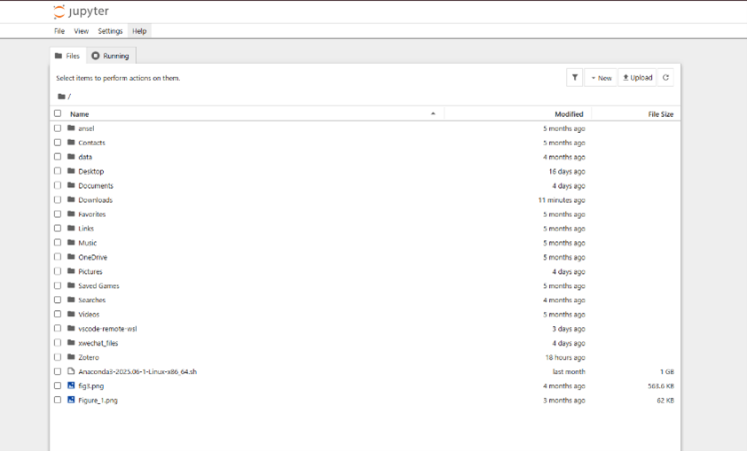

Python and Jupyter Notebook 安装指南
前言： 在实验3和4中，我们将使用 Python 语言和 Jupyter Notebook 工具。这个教程会手把手带你安装 Python 和 Jupyter Notebook。（本指南目前主要针对 Windows 电脑）
1. Python 安装
a. 下载安装包
从 Python 官网下载最新的 Windows 安装包： https://www.python.org/downloads/windows/

b. 运行安装程序
双击下载的安装文件。在安装界面上，请务必勾选以下两个选项：
Use admin privileges when installing py.exe（为安装程序授予管理员权限）Add python.exe to PATH(重要： 将 Python 添加到系统路径。这是什么？请看文末拓展A）
然后点击 Install Now。

c. 禁用路径长度限制
安装成功后，会看到一个提示界面，选择 Disable path length limit（禁用路径长度限制。为什么要这么做？请看文末拓展B）。
d. 验证安装
打开终端（Command Prompt），输入命令 python --version。如果安装成功，终端会显示安装的 Python 版本号（例如 Python 3.13.0）。
或者，输入命令 python 会进入 Python 的交互模式（命令行提示符会变成 >>>）。输入 exit() 并按回车可以退出该模式。

2. Jupyter Notebook 安装
a. 安装 Notebook
打开终端，输入命令 pip install notebook。（这个命令什么意思？请看文末拓展C）。
b. 启动 Notebook
等待下载安装完成。安装完成后在终端输入 jupyter notebook。
这个命令会启动 Jupyter Notebook 服务，并自动在你的默认浏览器中打开其界面。此时，浏览器中显示的是你启动终端时所在的那个目录的文件列表（图中例子是在C盘用户目录下，但实际路径取决于你在哪里执行的命令）。
你可以在当前目录下创建一个新文件夹来存放实验文件。在文件列表空白处右键即可创建新文件夹，然后双击进入。
重要： 运行 Jupyter Notebook 的那个终端窗口必须保持打开状态，它是 Jupyter 的服务器。关闭该终端窗口会同时关闭 Jupyter 服务。

c. 创建 Notebook
进入文件夹后，点击右上角的 New 按钮，选择 Python 3 (ipykernel) 来创建一个新的 Jupyter Notebook 文件。（什么是 kernel？请看文末拓展D）

d. 完成！
好了！你已经成功搭建好了 Jupyter Notebook！运行一个简单程序试试看吧！
print('Hello World!')
x=3
x+=3
print(x)
3. NumPy 库安装
Python 本身功能强大，但它的更多能力来自于丰富的第三方库（也称为“包”），这些库需要额外安装。在 Lab 3 和 4 中，我们会用到 numpy 库。
a. 安装 NumPy
打开终端（一个新的终端窗口，或者已经关闭了Jupyter的终端），输入命令 pip install numpy。
b. 使用 NumPy
等待安装完毕。安装后，如果 Jupyter Notebook 已经在运行，你需要重启它的内核（Kernel -> Restart）或完全退出 Jupyter 后重新启动，才能识别新安装的库。
在 Jupyter Notebook 的单元格中，输入 import numpy 来引用这个库。NumPy 是 Numeric Python 的缩写，它可以帮助我们快速地进行数学运算。
c. 试试看！
我们来试试吧！在单元格中输入以下代码，然后按 Shift + Enter 运行：
import numpy #引用numpy库
x = numpy.array([[1,2,3],[4,5,6],[7,8,9]]) # define a matrix
print(x)
y = x - 1 # minus 1 to all elements in this matrix
print(y)
x_dot_y = numpy.matmul(x, y) # do dot multiplication
print(x_dot_y)

拓展阅读
拓展A：什么是 PATH？为什么要勾选？
PATH 可以理解为电脑的“程序通讯录”或“地址簿”。当我们不将 python.exe 加入 PATH 时，电脑就不知道去哪个文件夹找这个程序。当你在终端输入 python 时，电脑就会报错“找不到命令”。将它加入 PATH，就相当于把 Python 的地址告诉了电脑，这样你在终端的任何位置都能快速找到并运行它。
拓展B：为什么选择 disable path length limit？
老版本的 Windows 系统有一个限制：文件或文件夹的完整路径长度不能超过 260 个字符。在编程时，我们很容易创建出深层嵌套的文件夹（例如一些库的依赖文件），这可能会导致一些意想不到的 FilePathTooLongException 错误。选择禁用此限制可以一劳永逸地避免这类问题，是一个安全且推荐的操作。
拓展C：pip install notebook 命令什么意思？
pip 是 Python 的包管理器 (Package Manager)，你可以把它理解为一个“软件库”或“应用商店”。它的主要任务是从网上（主要是 PyPI，Python Package Index）下载、安装和管理第三方库（Package）。pip install notebook 的意思就是：指挥 pip 这个工具，去软件库中找到名为 notebook 的软件包，并把它下载和安装到你的电脑上。
拓展D：什么是 Kernel？
内核 (Kernel) 是 Jupyter Notebook 背后真正运行代码的“引擎”或“大脑”。 - 前端 (Frontend): 你看到的浏览器界面，负责显示代码和结果，并接收你的输入。 - 内核 (Kernel): 负责接收前端的代码，执行计算，并将结果返回给前端显示。
选择不同的内核（如 Python、R、Julia）就意味着用不同的编程语言来解释和执行单元格中的代码。我们选择 Python 3 (ipykernel)，就是告诉 Jupyter 使用 Python 来作为执行引擎。